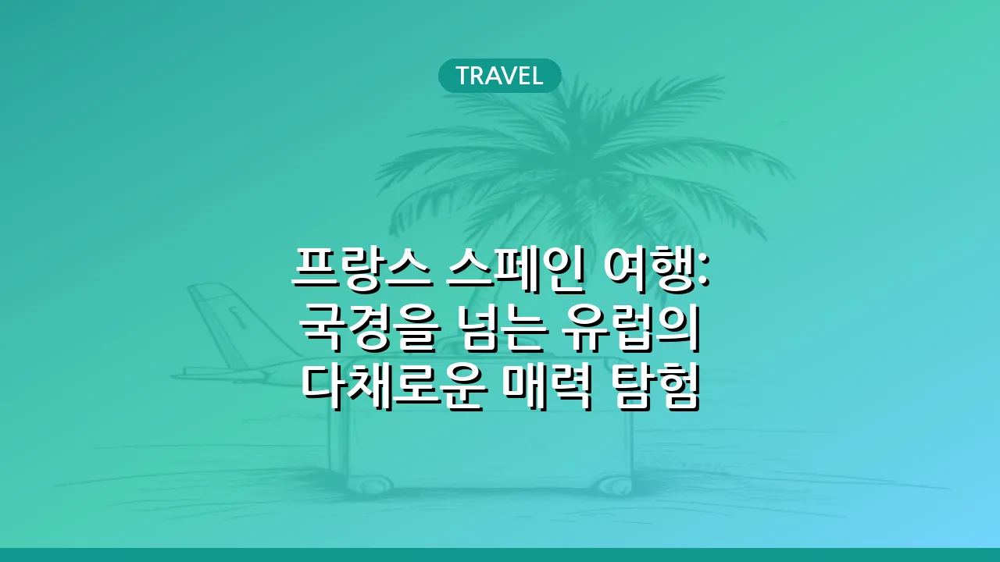

프랑스 스페인 여행: 국경을 넘는 유럽의 다채로운 매력 탐험
프랑스와 스페인은 지리적으로 인접해 있지만, 문화, 예술, 역사, 미식 등 모든 면에서 독특한 개성을 자랑하는 매력적인 유럽 국가입니다. 이 두 나라를 함께 여행하는 것은 마치 두 가지의 다른 유럽을 동시에 경험하는 듯한 특별한 경험을 선사합니다. 본 글에서는 프랑스와 스페인을 잇는 여정의 매력과 각 나라의 주요 특징, 그리고 효율적인 여행을 위한 실용적인 팁을 상세히 안내해 드립니다.
프랑스와 스페인, 왜 함께 여행해야 할까?
프랑스와 스페인은 유럽 서남부에 위치하며, 피레네 산맥을 경계로 국경을 맞대고 있습니다. 이러한 지리적 이점 덕분에 두 나라를 한 번의 여행으로 경험하기 매우 용이합니다. 단순히 지리적 인접성뿐 아니라, 프랑스의 우아하고 세련된 문화와 스페인의 열정적이고 활기찬 문화가 극명한 대비를 이루며 여행자에게 다채로운 경험을 선사합니다.
- 다양한 문화 경험: 고풍스러운 프랑스 도시의 낭만과 스페인 남부의 이슬람 문화 유산, 바스크 지방의 독특한 정서까지 폭넓게 경험할 수 있습니다.
- 효율적인 이동: 유럽 내 고속 열차(TGV, AVE), 편리한 버스 노선, 그리고 저가 항공사를 이용하면 국경을 넘는 이동이 생각보다 쉽고 빠릅니다.
- 풍부한 볼거리와 즐길 거리: 세계적인 박물관과 미술관, 아름다운 해변, 장엄한 산맥, 그리고 미식의 향연까지, 두 나라가 제공하는 즐길 거리는 무궁무진합니다.
프랑스의 매력: 예술, 미식, 그리고 낭만
프랑스는 예술과 낭만의 대명사로 불리며, 전 세계인의 사랑을 받는 여행지입니다. 수도 파리에서는 에펠탑, 루브르 박물관, 오르세 미술관 등 상징적인 명소들을 만날 수 있으며, 세느 강변을 따라 거닐며 낭만적인 분위기를 만끽할 수 있습니다.
- 예술과 건축: 파리의 고딕 양식 건축물부터 남프랑스의 고대 로마 유적까지, 프랑스의 역사가 담긴 건축물들은 그 자체로 예술 작품입니다. 인상주의 미술의 본고장이기도 합니다.
- 미식의 천국: 바게트, 크루아상, 마카롱 같은 디저트부터 고급 와인과 치즈, 푸아그라, 에스카르고 등 프랑스는 미식가들의 성지입니다. 각 지역마다 특색 있는 요리가 발달해 있습니다.
- 다채로운 풍경: 프로방스의 보랏빛 라벤더 밭, 코트다쥐르의 푸른 해변, 알프스 산맥의 웅장함 등 프랑스는 지역마다 확연히 다른 아름다운 자연경관을 자랑합니다.
스페인의 열정: 태양, 역사, 그리고 다채로운 문화
스페인은 태양의 나라, 열정의 나라로 불리며 활기차고 다채로운 매력을 뽐냅니다. 스페인 남부 안달루시아 지방에서는 이슬람 문화의 흔적을 엿볼 수 있고, 바르셀로나에서는 가우디의 독특한 건축 세계에 빠져들 수 있습니다. 마드리드는 프라도 미술관과 왕궁 등 스페인의 심장부 역할을 합니다.
- 독특한 건축 양식: 바르셀로나의 사그라다 파밀리아, 그라나다의 알람브라 궁전 등은 스페인만의 독특한 건축 미학을 보여주는 대표적인 예입니다.
- 열정적인 문화: 플라멩코 춤과 음악, 투우, 그리고 뜨거운 태양 아래 펼쳐지는 시에스타와 피에스타는 스페인의 활기 넘치는 문화를 상징합니다.
- 풍성한 미식: 타파스, 빠에야, 하몽, 츄러스 등 스페인 음식은 전 세계적으로 사랑받고 있으며, 지역별로 특색 있는 와인과 상그리아도 놓칠 수 없는 즐거움입니다.
국경을 넘는 이동 방법과 주요 도시
프랑스와 스페인 간 이동은 편리한 교통 인프라 덕분에 어렵지 않습니다. 고속 열차, 버스, 그리고 항공편을 적절히 활용하여 효율적인 여행 계획을 세울 수 있습니다. 특히 국경 지역에는 두 나라의 문화가 혼합된 독특한 도시들이 많아 탐험하는 재미를 더합니다.
- 프랑스 바스크 지방 (생장피에드포르, 비아리츠): 피레네 산맥 서쪽에 위치하며, 순례길의 시작점이자 아름다운 해변 도시입니다. 스페인 바스크 지방의 산세바스티안, 빌바오와 쉽게 연결되어 스페인 북부의 독특한 매력을 경험할 수 있습니다.
- 피레네 산맥 국경 지역 (안도라): 프랑스와 스페인 사이에 위치한 소국으로, 스키, 하이킹 등 자연을 즐기기에 좋습니다. 두 나라의 문화가 섞여 있는 독특한 분위기와 면세 쇼핑으로도 유명합니다.
- 프랑스 카탈루냐 (페르피냥): 프랑스 남부에 위치한 도시로, 스페인 카탈루냐의 바르셀로나, 지로나와 가까워 문화적 유사성을 느낄 수 있는 지역입니다. 지중해와 피레네 산맥의 경계에 있어 아름다운 풍경을 자랑합니다.
- 주요 이동 수단: 파리에서 바르셀로나까지는 고속 열차를 이용하면 편리하게 이동할 수 있으며, 이 외에도 다양한 도시 간 직행 버스나 저가 항공편을 활용할 수 있습니다.
두 나라 여행 시 알아두면 좋은 팁
프랑스와 스페인 여행을 더욱 즐겁고 편안하게 만들기 위한 몇 가지 팁을 알려드립니다. 기본적인 준비와 현지 상황에 대한 이해는 여행의 만족도를 높이는 데 크게 기여합니다.
- 통화 및 언어: 두 나라 모두 유로(€)화를 사용하며, 프랑스어와 스페인어가 공식 언어입니다. 기본적인 현지어 인사말을 익히거나 번역 앱을 활용하면 더욱 원활한 소통이 가능합니다.
- 교통패스 활용: 유럽 기차 여행을 계획한다면 유레일 패스 등을 고려해볼 수 있습니다. 도시 내에서는 대중교통 시스템이 잘 되어 있으므로 편리하게 이용할 수 있습니다.
- 숙소 및 식사: 인기 여행지의 경우 미리 숙소를 예약하는 것이 좋습니다. 식사 시간대가 한국과 다를 수 있으니 현지 문화를 이해하고 유연하게 대처하는 것이 좋습니다.
- 안전 유의: 관광객이 많은 지역에서는 소매치기 등 범죄에 유의해야 합니다. 귀중품은 안전하게 보관하고 항상 주변을 살피는 습관을 들이는 것이 중요합니다.
- 최신 정보 확인: 여행 전 방문하는 지역의 최신 날씨, 축제 정보, 그리고 필요한 경우 비자 및 입국 요건 등 공식 기관의 정보를 미리 확인하는 것이 좋습니다.
프랑스 스페인 여행, 나만의 특별한 여정을 만들자
프랑스와 스페인은 각각 독자적인 매력을 지니고 있지만, 함께 여행할 때 그 시너지는 더욱 커집니다. 낭만적인 도시의 정취와 열정적인 문화의 활기, 맛있는 미식과 아름다운 자연경관까지, 이 두 나라는 여행자에게 잊지 못할 추억을 선사할 것입니다. 본 글에서 안내된 정보를 바탕으로 자신만의 프랑스-스페인 여정을 계획하여 유럽의 다채로운 매력을 마음껏 경험해 보시길 바랍니다.
🔗 이 글도 함께 보면 좋아요: 손예진 현빈 부부 아들 탄생과 육아 이야기, 현재 근황